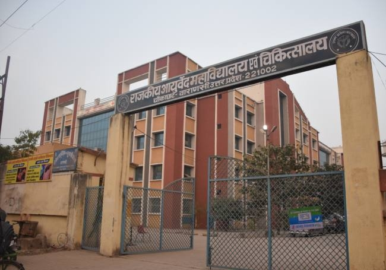

This institute was established in year 1960 and named ‘College of Medical Sciences’ then 1971 it was upgraded to ‘Institute of medical Sciences’. Today it has 10 Super-specialties departments, four dentistry Departments , eleven Ayurveda Departments and a school of Nursing ,overall 33 departments are in services.’ India Today’ has ranked this college #18 among the medical colleges in India and ‘Outlook India’ has also ranked this college #13.
Course Offered
Faculty of Medicine:MBBS (84 students) , MD/MS (134 seats in 22 subjects), DM/ MCh (17 seats in 10 subjects), MSc in Health Statistics (10 seats) and PhD in all the subjects.
The Faculty of Ayurveda:mparts courses of BAMS (78 seats), MD/MS(Ay) (39 seats) and PhD in all Ayurveda subjects.
Faculty of Dental Sciences:B.D.S (38 seats) and M.D.S. in Prosthodontics, Operative Dentistry and Orthodontics(one Seat each). B.Sc (Nursing) course is also offered (60 seats) at College of Nursing.
Admission Criteria
For MBBS and BAMS
Passed Intermediate Science/Pre-Medical Course or
10+2 or equivalent examination with a minimum of 50% marks (40% in case of SC/ST candidates) in English, Physics, Chemistry and Biology taken together.
Need to clear NEET(Natiional Eligibilty cum Entrance Test).
Candidates appearing in the qualifying examination may also apply and age must be between 17 years to 25 years .
For MD/MS
Candidates who have passed MBBS course recognized by the Medical Council of India and completed one year internship training are eligible to appear in the entrance examination.
Contact us
Contact Details: Institute of Medical Sciences Banaras Hindu University , Varanasi – 221005
Tel: +91 542 2369980 ,+91 542 6703248
Government Postgraduate Ayurveda College and Hospital-Varanasi

This college has very good reputation in department of ‘Ayurveda’ . This college offered some Undergraduate program or BAMS degree in the field of Ayurveda.
Course Offered
B.A.M.S (Bachelor of Ayurvedic Medicine and Surgery)
M.D. (Ayurveda)
Kayachikitsa Tantra (Internal Medicine)
Shalya Tantra (Surgery)
Shalakya Tantra (ENT)
Kaumarabhritya Tantra (Pediatrics)
Agada Tantra (Toxicology)
Bajikarana Tantra (Purification of the Genetic organs)
Rasayana Tantra (Health and Longevity)
Admission Criteria
Candidates should have passed 10+2 examination in Physics Chemistry Biology and English with 50% (45% for SC/ST) of marks from a recognized board of examination.
Selection is based on NEET(National Eligibility cum Entrance Test).